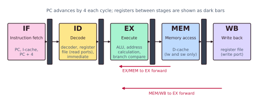
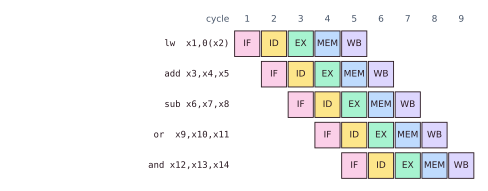
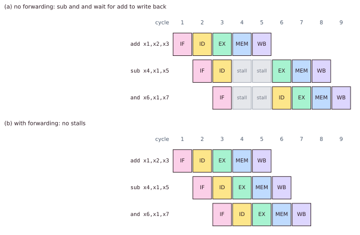
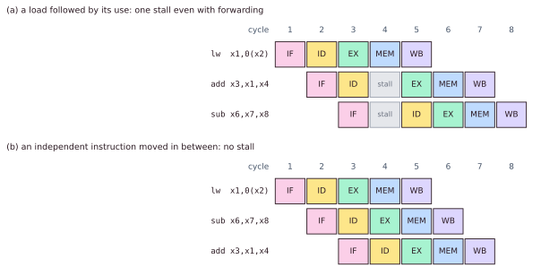
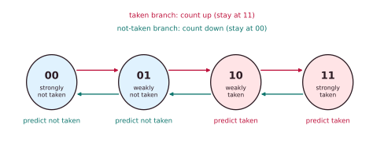

Chapter 2: Pipelining and Hazards¶
Pipelining is the single most important idea for making a processor fast without changing its instruction set. It overlaps the execution of many instructions like an assembly line. But the moment instructions share hardware, depend on each other's results, or hide behind a branch, the line jams. This chapter builds the classic five-stage pipeline from first principles, catalogues the three families of hazard, and shows the two hardware tricks that recover most of the lost performance: forwarding and branch prediction. It ends with the arithmetic of stalls, so that you can compute the effective CPI of a pipeline from a handful of numbers.
You should already know the Iron Law of Chapter 1: time is instruction count times CPI times clock period.
2.1 The idea: an assembly line¶
A non-pipelined processor carries one instruction to completion before it starts the next. If an instruction needs five units of work (fetch it, decode it, do the arithmetic, touch memory, write the result back), the datapath sits mostly idle: while the ALU works, the fetch logic, the memory port and the register-write port do nothing.
Think of laundry. Each load still takes three hours (wash, dry, fold). But as soon as load 1 moves from the washer to the dryer, load 2 can start washing, and all the machines stay busy. Pipelining applies the same idea inside a processor. It splits the work of each instruction into stages and lets a different instruction occupy each stage at the same time.
The classic five stages¶
The textbook pipeline for MIPS and RISC-V RV32I has five stages.
| Stage | Name | What happens | Hardware used |
|---|---|---|---|
| IF | Instruction fetch | Read the instruction at the PC from the instruction cache; work out PC + 4 | PC, I-cache, adder |
| ID | Instruction decode and register read | Decode the opcode; read the source registers; sign-extend the immediate | Decoder, register file (read ports) |
| EX | Execute | The ALU computes, or calculates an address, or compares for a branch | ALU, branch comparator |
| MEM | Memory access | A load reads, a store writes the data cache (lw and sw only) |
D-cache |
| WB | Write back | The ALU result or loaded value goes into the destination register | Register file (write port) |
Between the stages sit pipeline registers. They capture each stage's results at the clock edge and hand them to the next stage, like trays passed down the line.

2.2 Latency, throughput and the ideal speed-up¶
Two numbers are constantly confused.
Latency is the time for one instruction to travel from start to finish. Pipelining does not improve it. In fact it slightly worsens it, because every stage boundary adds a pipeline-register delay. A single instruction still takes five cycles, plus the register overhead.
Throughput is how many instructions complete per unit time. This is what pipelining improves: once the line is full, one instruction finishes every cycle instead of every five.
There is a second win. Each stage does about a fifth of the total work, so the clock period can be about five times shorter. Pipelining raises both the achievable frequency and the IPC (from 1/5 towards 1).
Pipelining does not make an instruction faster
An instruction still passes through all five stages, and each stage is a little slower because of the pipeline registers. What improves is how often instructions complete. A car still spends the same time on the assembly line; the factory finishes more cars per hour. If you ran only one instruction, pipelining would be a pure loss.
The space-time diagram¶
The canonical way to reason about a pipeline is a space-time diagram: rows are instructions, columns are clock cycles.

By cycle 5 every stage is busy, and from then on one instruction finishes every cycle. The four cycles at the start are the fill; a matching drain happens at the end.
How much faster, ideally?¶
With \(N\) stages and \(k\) independent instructions:
- Without pipelining the machine takes \(N \times k\) cycles (each instruction uses the whole datapath for \(N\) cycles).
- With pipelining it takes \(N + (k - 1)\) cycles: \(N\) to fill the line, then one more cycle per further instruction.
The speed-up is \(Nk/(N + k - 1)\), which approaches \(N\) as \(k\) grows.
| \(k\) | \(5k\) | \(5 + k - 1\) | Speed-up |
|---|---|---|---|
| 5 | 25 | 9 | 2.8 |
| 100 | 500 | 104 | 4.8 |
| 10 000 | 50 000 | 10 004 | 5.0 |
Real pipelines never reach \(N\). The stages are never perfectly equal, the pipeline registers cost time, and above all instructions get in each other's way. That is the subject of the next section.
2.3 Hazards: when the line jams¶
The staircase assumed that every instruction is independent and every resource is free every cycle. Real programs violate both assumptions. A hazard is anything that stops the next instruction from going ahead in its planned cycle. There are three families.
Structural hazards¶
Two instructions need the same piece of hardware in the same cycle. Suppose instructions and data share one memory port. In cycle 4 of the staircase, lw is in MEM reading data while or is in IF fetching itself: both want the port.
The textbook fix is architectural: give the pipeline separate memories for instructions and data (a split or "Harvard" L1), and a register file that can be read and written in the same cycle, so that ID's read and WB's write never collide. Where duplicating a unit is too expensive, such as a single large divider, the later instruction simply has to wait.
Data hazards¶
An instruction needs a result that an earlier instruction has not yet produced. This is the most common hazard. When two instructions touch the same register there are three possible patterns, named by the order of the accesses.
| Name | Pattern | Meaning | A problem in this in-order pipeline? |
|---|---|---|---|
| RAW | read after write | A later instruction needs an earlier one's result: a true dependence, because data really flows | Yes. It is the only real hazard here |
| WAR | write after read | A later write must not overtake an earlier read: an anti-dependence | No; everything happens in order |
| WAW | write after write | Two writes must land in order: an output dependence | No, for the same reason |
In the simple in-order pipeline, instructions read and write registers in program order, so only RAW can cause trouble. WAR and WAW become real once instructions can execute out of order; Chapter 3 shows how register renaming removes them.
A RAW example: the add writes x1 in WB (cycle 5), but the sub wants to read x1 in ID (cycle 3), which is two cycles too early.
add x1, x2, x3 # produces x1, written back in cycle 5
sub x4, x1, x5 # reads x1 in ID, cycle 3: too early!
and x6, x1, x7 # reads x1 in ID, cycle 4: still too early
Control hazards¶
A branch or jump does not know which instruction comes next until it has been resolved, which in the classic pipeline happens in EX. By then IF has already fetched the instructions that follow in line.
beq x1, x2, TARGET # equal? not known until EX
add x3, x4, x5 # already being fetched: wrong if the branch is taken
...
TARGET:
sub x6, x7, x8
If the branch is taken, the fetched instructions are wrong and must be thrown away (flushed). Branches make up 15 to 25% of the instructions in typical code, so this is the biggest single threat to a pipeline's speed.
2.4 Fixing data hazards¶
The simple fix: stall¶
A stall holds an instruction in its stage for a cycle, while an empty slot, a bubble, travels down the pipeline in its place. Without any further help the sub above must wait until add has written x1 back. The register file writes in the first half of a cycle and reads in the second half, so sub can read x1 in the same cycle that add writes it: that is cycle 5, two cycles later than sub wanted.
The clever fix: forwarding¶
The add's answer exists at the end of its EX stage (cycle 3). It is only written in cycle 5. Forwarding (also called bypassing) adds wires that carry a fresh result straight from a pipeline register into the ALU input of a later instruction, skipping the register file.
- EX/MEM to EX: the ALU output of the instruction one ahead is fed back to the ALU input of the dependent instruction. It covers a dependence between adjacent instructions.
- MEM/WB to EX: the result (ALU or loaded value) of the instruction two ahead is fed to the ALU input. It covers a dependence at distance two.
With both paths every ALU-to-ALU dependence costs zero stalls: the value always exists at an earlier stage than the consumer needs it.

Example 2.1: tracing the RAW example
Trace add x1,x2,x3; sub x4,x1,x5; and x6,x1,x7 through the pipeline. The register file writes in the first half of a cycle and reads in the second.
Without forwarding. add: IF 1, ID 2, EX 3, MEM 4, WB 5. sub is fetched in cycle 2 and decodes in cycle 3, but needs x1, which add writes in cycle 5. It repeats ID in cycles 4 and 5, so it needs two stall cycles; it reads x1 in cycle 5 (second half), then EX 6, MEM 7, WB 8. and is held behind it in IF, reaches ID in cycle 6, then EX 7, MEM 8, WB 9. Its operand x1 is long since written. The total is 9 cycles.
With forwarding. sub needs x1 as an input to its EX stage in cycle 4. add computed it at the end of cycle 3, so the EX/MEM to EX path delivers it. and is two instructions behind, so MEM/WB to EX delivers it in cycle 5. Nothing stalls: the three instructions finish in \(5 + 2 = 7\) cycles.
The one case forwarding cannot fully fix: load-use¶
lw x1, 0(x2) # the value arrives at the END of MEM (cycle 4)
add x3, x1, x4 # needs it at the START of EX (cycle 4)
A load's value exists only after the memory stage. The very next instruction wants it in the same cycle. No wire can carry a value backwards in time. So a load followed immediately by an instruction that uses it, a load-use hazard, costs exactly one stall, after which forwarding delivers the value.
The bubble can be avoided in software. If an unrelated instruction is moved between the load and its use, the bubble is filled with useful work. Compilers do exactly this.

2.5 Fixing control hazards¶
Three simple options¶
| Strategy | How it works | Cost |
|---|---|---|
| Stall | Fetch nothing until the branch is decided | Pay the full delay on every branch |
| Assume not taken | Keep fetching the next instructions in line; if the branch is taken, flush them | Free when not taken; a penalty when taken |
| Delayed branch | The ISA says the instruction after a branch always runs; the compiler fills that slot | Bakes one pipeline's depth into the ISA for ever |
MIPS and early SPARC used delayed branches. The scheme aged badly as pipelines grew deeper, and RISC-V deliberately has none: a delay slot leaks a microarchitectural detail into the ISA, which is exactly what the contract of Chapter 1 should avoid.
The real answer: predict¶
Branch prediction guesses each branch's direction (and target) at fetch time, keeps fetching down the guessed path, and pays a penalty only when the guess was wrong. Modern predictors are right 95 to 99% of the time, so most branches cost nothing at all.
| Predictor | How it guesses | Typical accuracy |
|---|---|---|
| Static | A fixed rule, such as "backward branches are taken" (loops jump back) | 65 to 80% |
| 1-bit | "Whatever this branch did last time" | Misses twice per loop |
| 2-bit counter | Needs two surprises in a row to change its mind | 85 to 93% |
| Correlating (gshare) | Also looks at what the last few branches did; the table is indexed by the PC combined with a global history register | 95% and more |
The 2-bit saturating counter¶
A 2-bit counter has four states: strongly not taken (00), weakly not taken (01), weakly taken (10) and strongly taken (11). A taken branch counts up, saturating at 11; a not-taken branch counts down, saturating at 00. The top bit is the prediction.

The point is hysteresis. One odd result only nudges the counter from "strongly" to "weakly"; the prediction does not flip. It takes two surprises in a row to change its mind. Think of a friend who is late once and is still "usually on time".
Example 2.2: 1-bit against 2-bit on a short loop
A loop's closing branch has the outcomes T T T N repeated three times (T taken, N not taken): 12 branches. The 1-bit predictor starts at "not taken"; the 2-bit counter starts at 01 (weakly not taken).
| Branch | 1 | 2 | 3 | 4 | 5 | 6 | 7 | 8 | 9 | 10 | 11 | 12 |
|---|---|---|---|---|---|---|---|---|---|---|---|---|
| Actual | T | T | T | N | T | T | T | N | T | T | T | N |
| 1-bit prediction | N | T | T | T | N | T | T | T | N | T | T | T |
| 1-bit right? | no | yes | yes | no | no | yes | yes | no | no | yes | yes | no |
| 2-bit state before | 01 | 10 | 11 | 11 | 10 | 11 | 11 | 11 | 10 | 11 | 11 | 11 |
| 2-bit prediction | N | T | T | T | T | T | T | T | T | T | T | T |
| 2-bit right? | no | yes | yes | no | yes | yes | yes | no | yes | yes | yes | no |
The 1-bit predictor is right 6 times out of 12 (50%). The 2-bit counter is right 8 times out of 12 (67%). Run the same pattern four times (16 branches) and the scores are 8 of 16 (50%) and 11 of 16 (69%). The 1-bit predictor misses at the exit and again on the first pass of the next entry, because it has just remembered "not taken". The 2-bit counter sits at "strongly taken", the exit only nudges it to "weakly taken", and the next entry is predicted correctly.
For a loop of 100 iterations entered many times, the steady state is 2 mispredictions per loop for the 1-bit predictor and 1 for the 2-bit counter. On programs full of loops, halving the misses is a large win.
Predicting where, not just whether¶
Knowing that a branch is taken is not enough. The fetch stage also needs the target address, and it needs it now. A branch target buffer (BTB) is a small table, looked up with the branch's own address, that remembers where the branch jumped last time. Together, a direction predictor and a BTB let the fetch stage redirect itself in the very cycle in which it meets a branch.
2.6 Deeper pipelines¶
Superpipelining splits the work into many more, shorter stages (10, 15, even 31) so that the clock can tick faster. The gains are a shorter clock period and more instructions in flight, which suits long, predictable streams of work. The costs are real. A wrong branch guess now flushes about 15 instructions instead of 2. Results travel further to be forwarded. The pipeline-register overhead eats into each shorter stage. Power rises.
The Pentium 4 pushed to 20 to 31 stages chasing gigahertz, and lost to designs with fewer stages and better CPI. Deep pipelines demand excellent branch prediction, and they are one reason the industry turned to out-of-order execution, the subject of Chapter 3: a core with independent work to do is not idle while a branch or a cache miss resolves.
2.7 The arithmetic of stalls¶
A pipeline's ideal CPI is 1. Every stall adds to it. The effective CPI is the ideal plus the average number of stall cycles per instruction:
Example 2.3: effective CPI of a five-stage pipeline with forwarding
Loads are 25% of instructions; half of them are followed straight away by their use, and each such case costs 1 stall. Branches are 20% of instructions; the predictor is wrong on 10% of them, and each misprediction costs 3 cycles.
The CPI is 18.5% above the ideal; equivalently, the pipeline delivers \(1/1.185 = 84\%\) of its ideal throughput. A better predictor, wrong only 3% of the time, cuts the branch term to \(0.20 \times 0.03 \times 3 = 0.018\) and the CPI to \(1.125 + 0.018 \approx 1.14\).
This is also why a real five-stage pipeline typically reaches only a 3 to 4 times speed-up over a non-pipelined machine, not 5: load-use bubbles, branch mispredictions, shared units such as dividers, the time to fill and drain, and stages of unequal length. The slowest stage sets the clock, so if one stage is 30% longer than the others, the clock period grows by 30% and the frequency falls to \(1/1.3 \approx 77\%\) of what balanced stages would give.
If adding stages makes every hazard more expensive, there is an optimal depth for a given prediction accuracy: the point at which the marginal gain in frequency equals the marginal cost of mispredictions. The worse the predictor, the shallower that optimum.
2.8 Summary¶
- Pipelining overlaps the stages IF, ID, EX, MEM and WB of consecutive instructions. It raises throughput and the clock rate, not the latency of one instruction. With \(N\) stages and \(k\) instructions it takes \(N + k - 1\) cycles.
- Hazards are structural (shared hardware: split caches and extra ports), data (RAW is the only real one in order; WAR and WAW appear with out-of-order execution) and control (branches).
- Forwarding (EX/MEM to EX and MEM/WB to EX) removes almost all data stalls. A load followed immediately by its use still costs one bubble, which compilers fill with an independent instruction.
- Branch prediction answers control hazards. A 2-bit counter misses once per loop where a 1-bit predictor misses twice; a BTB supplies the target; gshare-style predictors pass 95%.
- Deeper pipelines clock faster but pay more for every misprediction.
- \(\text{CPI}_{\text{eff}} = 1 + \sum(\text{frequency} \times \text{penalty})\).
2.9 Exercises¶
Exercise 2.1. A five-stage pipeline runs 1 000 independent instructions. How many cycles does it take?
Answer
\(5 + 999 = 1\,004\) cycles.
Exercise 2.2. With forwarding, how many stalls does lw x5,0(x1) followed immediately by add x6,x5,x5 cost? How many if an unrelated instruction sits between them?
Answer
One stall: a load-use hazard. With an unrelated instruction in between, none: the value is forwarded from MEM/WB to EX.
Exercise 2.3. Why might a real five-stage pipeline be only 3 to 4 times faster than a non-pipelined machine, rather than 5 times?
Answer
Load-use bubbles, branch mispredictions, structural stalls on shared units, the time to fill and drain the pipeline, and stages of unequal length (the slowest stage sets the clock).
Exercise 2.4. Draw the five-stage diagram for
lw x1, 0(x2)
add x3, x1, x4
sub x5, x6, x7
or x8, x3, x9
(a) without forwarding (the register file writes in the first half of a cycle and reads in the second); (b) with forwarding; (c) after reordering the code to remove every stall. State the total number of cycles in each case.
Answer
(a) No forwarding: 11 cycles.
| Instruction | 1 | 2 | 3 | 4 | 5 | 6 | 7 | 8 | 9 | 10 | 11 |
|---|---|---|---|---|---|---|---|---|---|---|---|
lw x1,0(x2) |
IF | ID | EX | MEM | WB | ||||||
add x3,x1,x4 |
IF | ID | stall | stall | EX | MEM | WB | ||||
sub x5,x6,x7 |
IF | IF | IF | ID | EX | MEM | WB | ||||
or x8,x3,x9 |
IF | ID | stall | EX | MEM | WB |
add needs x1, which lw writes in cycle 5, so it waits two cycles. sub is held behind it, and is not itself dependent. or needs x3, written by add in cycle 8, and has already had one cycle of delay from sitting behind sub, so it needs only one more stall. The total is 11 cycles: the stall-free base of \(5 + 3 = 8\) plus 3 stall cycles.
(b) With forwarding: 9 cycles. Only the load-use pair stalls, for one cycle (add repeats ID in cycle 4, EX in 5). or needs x3 from add, two instructions ahead, and gets it by forwarding without stalling. \(8 + 1 = 9\).
(c) Reordered: 8 cycles. Move sub between lw and add:
lw x1, 0(x2)
sub x5, x6, x7
add x3, x1, x4
or x8, x3, x9
add is now two instructions behind lw and gets x1 by MEM/WB to EX forwarding; or is one behind add and gets x3 by EX/MEM to EX. There are no stalls: \(5 + 3 = 8\) cycles.
Exercise 2.5. In a pipeline with forwarding, loads are 30% of instructions and 40% of them are followed immediately by their use (1 stall each). Branches are 15% of instructions, 8% of them are mispredicted, and each misprediction costs 2 cycles. What is the effective CPI?
Answer
Load-use: \(0.30 \times 0.40 \times 1 = 0.12\). Branches: \(0.15 \times 0.08 \times 2 = 0.024\). \(\text{CPI}_{\text{eff}} = 1 + 0.12 + 0.024 = 1.144\).
Exercise 2.6. A loop of 3 iterations is run three times, so the closing branch's outcomes are T T N T T N T T N. (a) Simulate a 1-bit predictor starting at "not taken" and mark each guess right or wrong. (b) Simulate a 2-bit saturating counter starting at 01 and write the state after each branch. (c) For a loop of 100 iterations entered many times, how many mispredictions per loop does each make in the steady state?
Answer
(a) 1-bit predictions: N T T N T T N T T against actual T T N T T N T T N. It is wrong on branches 1, 3, 4, 6, 7 and 9: 6 of 9 wrong.
(b) The 2-bit counter's state after each branch is 10, 11, 10, 11, 11, 10, 11, 11, 10. It predicts N before branch 1 and T before every other branch, so it is wrong on branches 1, 3, 6 and 9: 4 of 9 wrong.
(c) For a long loop the 1-bit predictor makes 2 mispredictions per loop (the exit and the re-entry); the 2-bit counter makes 1 (the exit only).
Exercise 2.7. Five equal stages of 200 ps each give a non-pipelined path of 1 000 ps. (Ignore register overhead.) What is the ideal speed-up of the pipeline over a non-pipelined machine on a long instruction stream? Now suppose one stage is 30% longer (260 ps). What does the speed-up become?
Answer
Balanced: clock period 200 ps against 1 000 ps per instruction without pipelining, a speed-up of 5. With one stage at 260 ps the clock period must be 260 ps: the speed-up is \(1\,000/260 \approx 3.8\). The frequency is \(200/260 \approx 77\%\) of the balanced value, so a 30% longer stage costs about 23% of the frequency.
Exercise 2.8. Classify each pair as RAW, WAR, WAW or no dependence on the registers shown, and say which can stall the five-stage in-order pipeline of this chapter.
(a) add x1,x2,x3 then sub x4,x1,x5 (b) add x1,x2,x3 then sub x2,x4,x5 (c) add x1,x2,x3 then or x1,x6,x7
Answer
(a) RAW on x1 (true dependence); it can stall or need forwarding. (b) WAR on x2 (add reads it, sub later writes it): harmless in an in-order pipeline. (c) WAW on x1: harmless in an in-order pipeline, because writes land in program order. WAR and WAW matter only once instructions can execute out of order (Chapter 3).